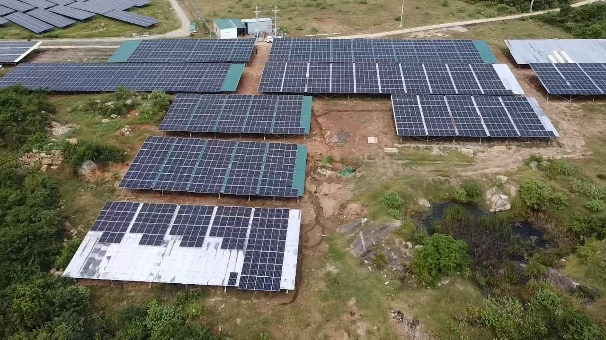
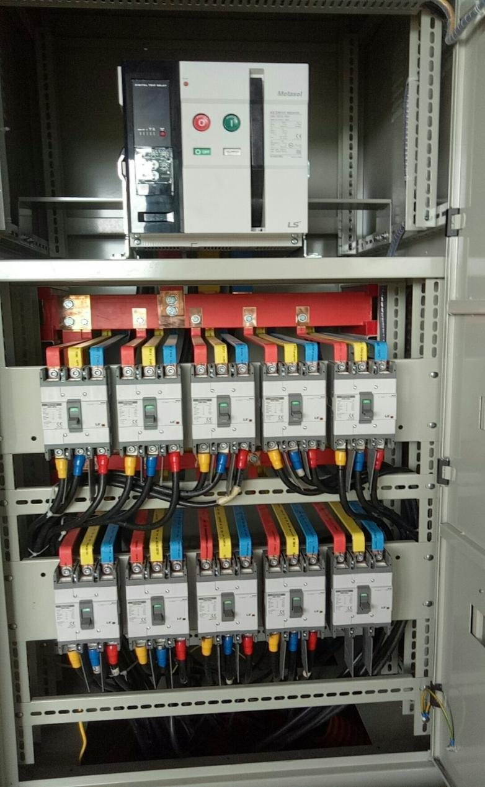
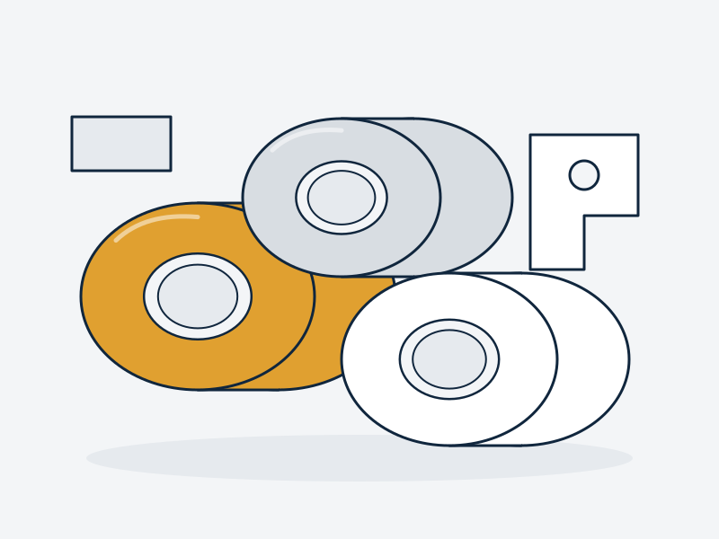
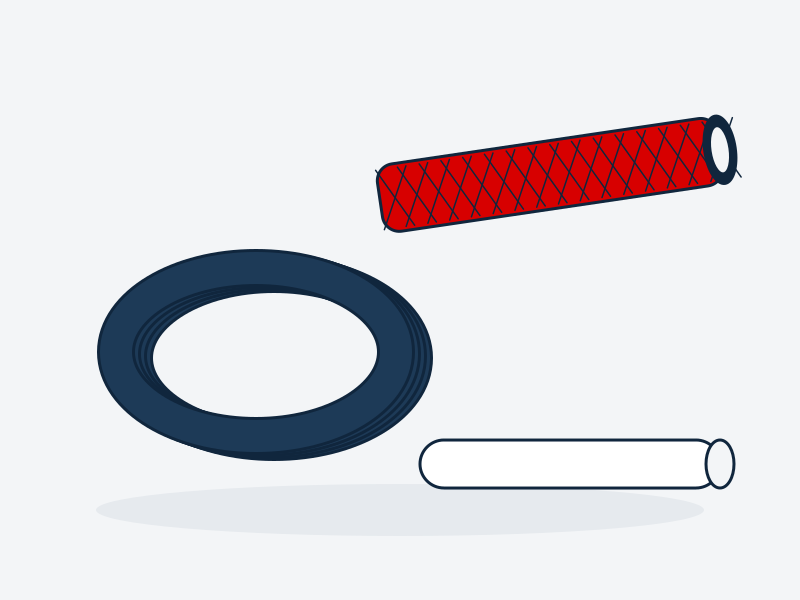

Solar Leader
地面安装阵列 · 1,000 kWp (DC)
由 Solar Leader 团队交付，时间为该团队加入 HearS 之前。
- 组件
- 2,247 × LONGi 445 W
- 逆变器
- 9 × Huawei SUN2000-100KTL-M1
更多照片 (2)


每个称重传感器将载荷转化为流体压力。管路将其传送到洁净室内的求和总计仪（Summing Totalizer），在那里转化为一个电子信号。秤体处的水、高压冲洗和雷击不会触及任何电子部件。
“Never Replace Your Load Cells Again!”（无需再更换称重传感器！）
这是 Emery Winslow Scale 为其 Hydrostatic™ 静压式称重传感器提出的口号——并有终身质保（厂家承诺）作为保障，防范水和雷击造成的损坏（“lifetime guarantee against water and lightning damage”）。这正是 HearS 所依托的核心技术。

静压式称重传感器通过管路将重量以流体压力形式传送到洁净区域的总计仪，因此称重现场没有任何电子部件。

一项称重技术，八大工业领域——每个领域都有专为越南市场设立的 HearS 解决方案页面。
HearS 设计机械结构，将称重传感器适配到您现有的罐体和筒仓上，进行安装、调试，与您的 PLC、SCADA 或 ERP 集成，并为每个工厂编写 MES 软件。
离网农场饲料筒仓称重：与 ANDUOR 合作的可行性研究。
扫码称重与废料管理：扫描二维码、称量货物并记录结果——包括按机器、类别和操作员统计的废料。
太阳能发电：用于工厂和农场的光伏板、逆变器和电池储能——包括为离网称重站点供电。

HearS 称重解决方案分为三层——每一层解决下一层无法解决的问题。
每一次称重都扫码并记录——货物上的二维码、质量控制（QC）模块、废料报告和金属消耗——采用 CCSS 的 E-Tools。
扫码称重与废料管理: 第 2 层——数字层：MES在秤体处无电子部件的罐体、汽车衡和地面秤，适用于高压冲洗、浸水、雷击、腐蚀和危险区域。HearS 将全球技术打包成本地解决方案：在越南提供勘察、机械设计、安装、集成和支持。
HearS 经销的工业用品，以及太阳能项目。
HearS 太阳能团队以 Solar Leader 品牌完成的太阳能项目，时间为该团队加入 HearS 之前。客户名称不予披露。

Solar Leader
由 Solar Leader 团队交付，时间为该团队加入 HearS 之前。


Solar Leader
由 Solar Leader 团队交付，时间为该团队加入 HearS 之前。

Solar Leader
由 Solar Leader 团队交付，时间为该团队加入 HearS 之前。

HearS 供应工业胶带和模切解决方案。


我们倾听应用需求、现场条件和限制因素。
我们确定解决方案的规格，并准备您决策所需的文件。
我们供应设备并组织安装。
我们在调试、咨询和维护规划方面随时提供支持。